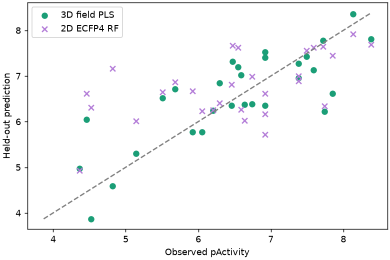
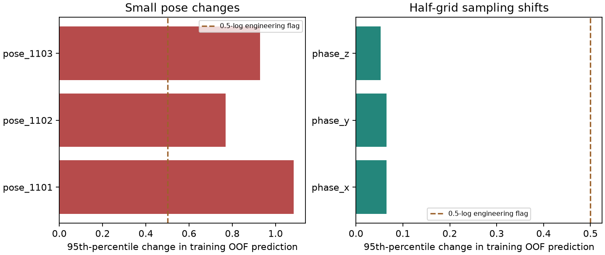

88 measured compounds · original 59/29 partition · supplied source alignment · SARscope-native MMFF94 fields and nested PLS · 99 label permutations
Source and state checks → review supplied alignment → calculate training-grid fields → nested selection → held-out prediction → uncertainty, domain and export audits.
Positive fixed-alignment result: nested q² 0.612; held-out predictive R² 0.630 (conditional 95% interval 0.351–0.801); RMSE 0.669; Spearman 0.729; permutation p = 0.01.
This is a retrospective demonstration on an already inspected public benchmark, not a new blinded study or package-wide certification. Predictions are conditional on the supplied alignment. Small-pose stress checks failed: use contours and potency gains as exploratory associations, not robust optimisation advice.
Predictive R² is 1 − SSE/SST, not Pearson correlation squared. No test compound was removed and no test-label mean correction was applied.
3D RMSE 0.669; 2D ECFP4 RF 0.950; training-mean baseline 1.119. RF minus 3D RMSE = 0.281, paired scaffold-block 95% interval [0.032, 0.547]. One historical split is not general superiority.

Intervals use 2,000 paired scaffold-block resamples across 24 held-out scaffold blocks, conditional on the fitted model and test population; they do not include alignment or experimental uncertainty.
| metric | estimate | lower_95 | upper_95 | method | repeats | valid_repeats | scaffold_blocks | seed |
|---|---|---|---|---|---|---|---|---|
| R² | 0.630 | 0.351 | 0.801 | paired scaffold-block percentile bootstrap | 2000 | 2000 | 24 | 42 |
| RMSE | 0.669 | 0.484 | 0.843 | paired scaffold-block percentile bootstrap | 2000 | 2000 | 24 | 42 |
| MAE | 0.528 | 0.384 | 0.690 | paired scaffold-block percentile bootstrap | 2000 | 2000 | 24 | 42 |
| RMSE gain versus baseline | 0.450 | 0.198 | 0.709 | paired scaffold-block percentile bootstrap | 2000 | 2000 | 24 | 42 |
All 29/29 test molecules fall inside the training-PCA box. This coarse descriptor-range diagnostic is not a calibrated confidence probability or evidence that every compound is reliably predictable.
Half-grid shifts and the common-translation control pass the declared numerical checks. Three 0.25 Å/5° relative-pose perturbations fail the original engineering limits. These use training compounds only and do not select a replacement alignment.

Exported numerical coefficients, preprocessing and intercept reproduce every prediction without an executable pickle. A separate audit removed all compound properties and recalculated only the 29 held-out molecules' fields on the frozen grid; maximum prediction discrepancy was 7.1e-15. Changing test activities by +100 left fitted predictions and training CV unchanged.
| case | status | nested_q2 | test_r2 | error |
|---|---|---|---|---|
| thrombin_source_alignment | completed | 0.612159 | 0.62983 | |
| ccr5_generated_from_csv | failed | 62 (compound 9/75, 8 completed): Core-constrained embedding produced no conformer within its bounded search. The reference core may be incompatible with this molecule's stereochemistry or conformation. Review the reference or provide a reviewed pre-aligned SDF; no stereochemistry or constraints were relaxed. |
The CCR5 CSV route did not complete constrained embedding; no partial series or substitute alignment was scored. Thus this demo supports reviewed pre-aligned input, not a guaranteed SMILES-to-bioactive-alignment workflow.
Open 3D QSAR · own compounds → Try a measured 3D-QSAR example → Thrombin. Select the MMFF94 worked-example profile, review the source terms, fetch the data, apply its settings, then prepare and review the overlay. Modelling requires a separate Run click. For a CSV-only upload, you must generate/review a new alignment; do not expect the supplied-frame scores to carry over.
Source: Sutherland et al. (2004); original series: Böhm et al. (1999). Original ACTIVITY values/states and complete source partition retained. Supporting structures have separate CC BY-NC 4.0 terms and are not bundled here. No docking, ligand-state guessing or external QSAR solver was used.